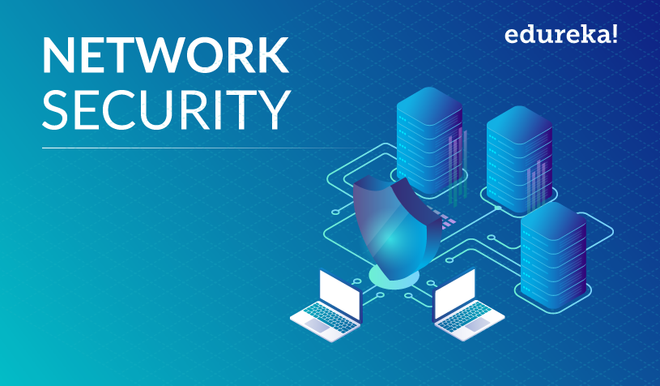

- kali linux
- network security
- cryptography
- chain risk management
- cloud security
- internet of things (iot)security
1
.jpg)
kali linux
Kali Linux (formerly known as BackTrack Linux) is an open-source, Debian-based Linux distribution aimed at advanced Penetration Testing and Security Auditing. It does this by providing common tools, configurations, and automations which allows the user to focus on the task that needs to be completed, not the surrounding activity.
for more inforfation click on here
kali.org
2

netwoek security
Network security is the protection of the underlying networking infrastructure from unauthorized access, misuse, or theft. It involves creating a secure infrastructure for devices, applications, users, and applications to work in a secure manner.
for more inforfation click on here
network security
3
cryptography
In today’s age of computers cryptography is often associated with the process where an ordinary plain text is converted to cipher text which is the text made such that intended receiver of the text can only decode it and hence this process is known as encryption. The process of conversion of cipher text to plain text this is known as decryption.
for more inforfation click on here
crypto
4

68
chain risk management
Supply chain risk management, by definition, is the process by which organizations take action to identify, assess and mitigate the risks they face within their entire supply chain. TechTarget describes supply chain risk management (SCRM) as: 'The coordinated efforts of an organization to help identify, monitor, detect and mitigate threats to supply chain continuity and profitability.'
for more inforfation click on here
chain risk
5
.jpg)
cloud security
Cloud security is a discipline of cybersecurity that focuses on protecting cloud systems and data from internal and external threats, including best practices, policies, and technologies that help companies prevent unauthorized access and data leaks. When developing a cloud security strategy, companies must take into account four types of cloud computing environments:
for more inforfation click on here
cloud c
6
.jpg)
internat of things(IOT)security
IoT security is the technology segment focused on safeguarding connected devices and networks in the internet of things (IoT). IoT involves adding internet connectivity to a system of interrelated computing devices, mechanical and digital machines, objects, animals and/or people. Each "thing" is provided a unique identifier and the ability to automatically transfer data over a network. Allowing devices to connect to the internet opens them up to a number of serious vulnerabilities if they are not properly protected.